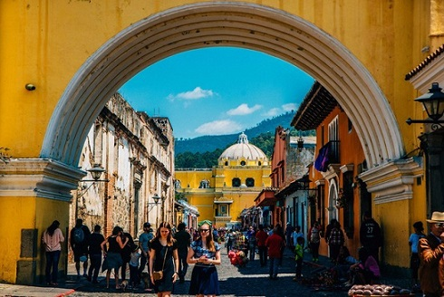
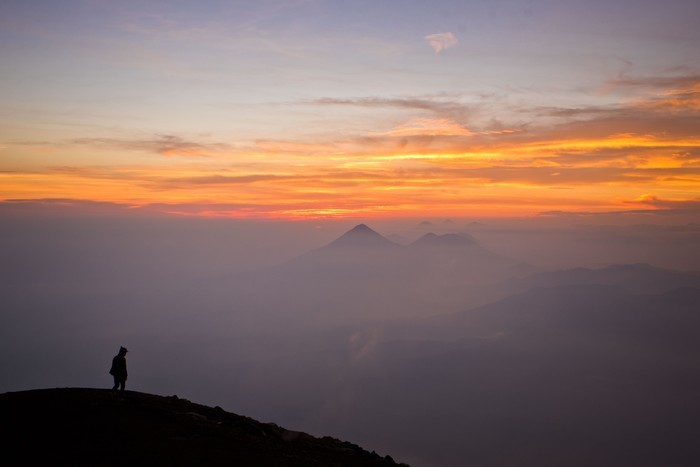
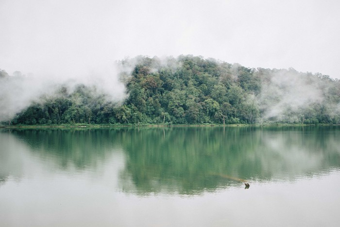
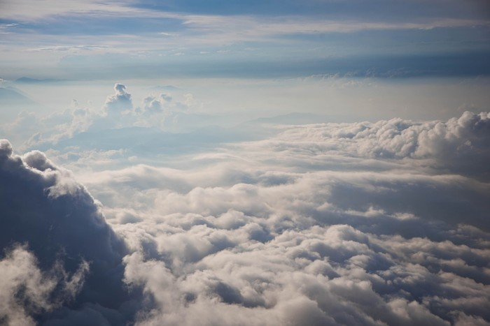
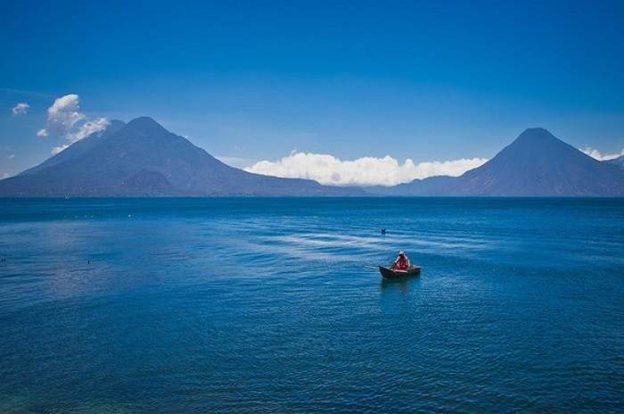
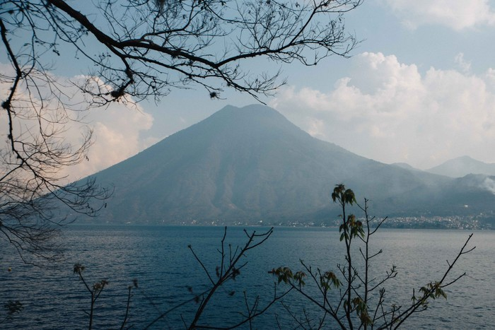
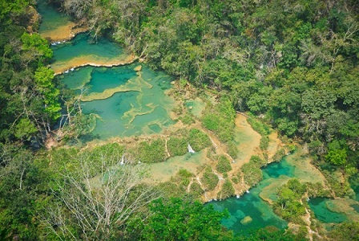
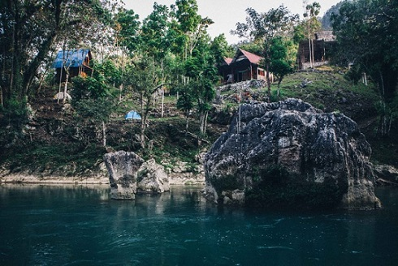
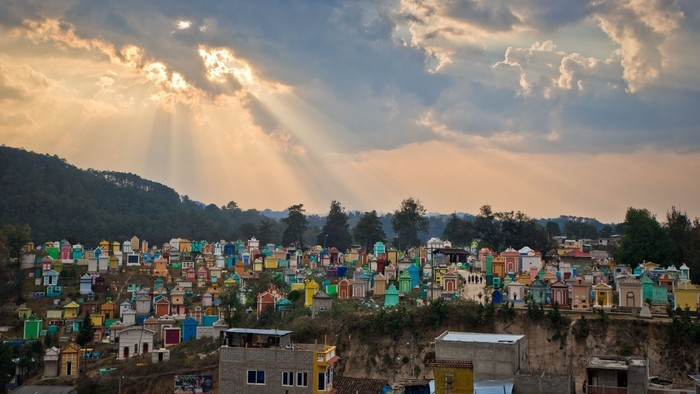
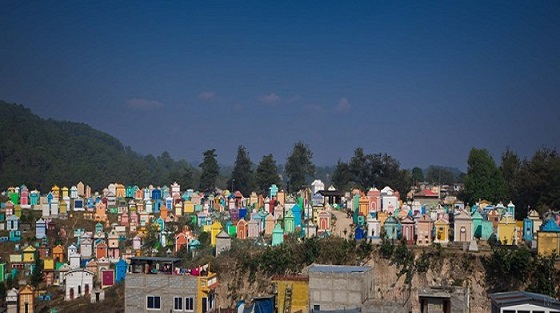

morly旅游网
危地马拉 在玛雅语的意思是：树木繁盛之地。除了繁盛的森林为它赢得“常春王国”的别名，它还有很多东西能让旅行者欲罢不能。
危地马拉并不是到处都是度假胜地，就像你在墨西哥或哥斯达黎加看到的那样。然而，随着危地马拉继续与定义了20世纪后半叶危地马拉历史的长达36年的内战保持距离，可以有把握地说，未来将出现更多的危地马拉度假胜地。就目前而言，你选择的危地马拉度假胜地相当有限，但这里有几个豪华的地方，你可以在那里放松一下。在加勒比地区进行的巡游活动持续增长，这导致了在东部的圣托马斯德卡斯提拉的主要邮轮码头附近的瓜地马拉度假村的建设，以及西部的Quetzal。沿着美丽的阿提特兰湖的海岸，有一些度假村提供最好的湖边休闲。
 火山群
火山群 危地马拉,坐落了37座火山,来这里看火山，就像是去 西藏 看雪山，像皇帝挑妃子， 这其中有云雾笼罩的圣 玛利亚 火山（Santa Maria），幸运的话，你可以看到玛雅族人围着圈跳舞歌唱，就着火山的怒吼。有Chicabal火山湖，玛雅人祭祀的圣地，雨天去的话，泥潭跋涉的奖赏是如画的景色，会动的水墨派。
如果有体力有时间，值得挑战的是徒步Acatenango火山。从海拔2500米到海拔4000米的路途，会先后经过农田区，云雾森林区，高山区以及最终的火山区，各有各的美艳，最美是在长途跋涉以后，星空下生个篝火，火炉煮着芬芳四溢的咖啡，山风一刀一刀地刮，不远处是火山的怒吼，紧接着岩浆喷发，燃亮天际。
 阿提特兰湖
《美丽新世界》的作者赫胥黎曾深情地向它表白“ 科莫 湖，在我看来，触到了如画般美景的极限，但 阿蒂特兰湖 ，如同 科莫 湖配上几座雄伟的火山，那实在是美得太过分了。”湖区点缀了很多小村庄，各有鲜明特色，有有背包客的派对小镇，还有嬉皮士的修行地，有独占一方的中高端度假村。
活动也有很多，上可滑翔天际、登火山观日出，下可泛舟，游泳，潜水。或啥都不干，就躺在吊床上摇晃，听风一阵阵地刮过湖面，想晚上到底是吃鱼还是吃鸡。
 Semuc Champey
Semuc Champey溶洞是一条300米长石灰岩的地貌、暗河所构成的，Semuc Champey ，在世外的“小 黄龙 ”尽兴玩水。先是经受山路十八弯的曲折，然后是世外 桃源 的风光，浓密的丛林里色彩缤纷的河流，国人称之为“小 黄龙 ”，但比 黄龙 好的是，在这里你可以跳进去，打滚，跳水，游泳，荡秋千，可以边轮胎漂流边喝啤酒，还可以拿着蜡烛钻进暗流涌动的幽深洞穴探险。
 七彩墓地
为什么把“死亡”搞得这么色彩缤纷呢？当地人的看法是“死者并没有死，他还在活在我们的生活中”。所以没必要搞得那么悲伤，据说墓碑的颜色还是死者生前就挑好的，每逢亡灵节，还有很多活着的亲人，会带上美酒食物以及野餐垫，来跟死去的亲人吃顿团圆饭的。
市场的中心有两座教堂，高的那座叫 圣托马斯 ，400年历史。融合了原始信仰和天主教，既有基督教的圣人像，也有熏香蜡烛，不时有萨满和当地人提着烟酒和活鸡进行祭拜仪式。边上有坐小山，山脚是面具博物馆，山顶有座献祭石，是玛雅人的土地公，求土地肥沃五谷丰登的。据说有几千年的历史，朝代更迭，他自岿然不动。如果没遇到祭拜，意思不大，但是沿途风景不错，松风吹解带，山顶可以俯瞰小城。
 内容整理至网络，如有侵权，请联系我们！1255394075@qq.com